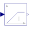

LimIntegratorIntegrator with limited value of the output and optional reset |

|
Information
This information is part of the Modelica Standard Library maintained by the Modelica Association.
This blocks computes y as integral of the input u multiplied with the gain k. If the integral reaches a given upper or lower limit and the input will drive the integral outside of this bound, the integration is halted and only restarted if the input drives the integral away from the bounds.
It might be difficult to initialize the integrator in steady state. This is discussed in the description of package Continuous.
If parameter limitsAtInit = false, the limits of the integrator are removed from the initialization problem which leads to a much simpler equation system. After initialization has been performed, it is checked via an assert whether the output is in the defined limits. For backward compatibility reasons limitsAtInit = true. In most cases it is best to use limitsAtInit = false.
If the reset port is enabled, then the output y is reset to set or to y_start (if the set port is not enabled), whenever the reset port has a rising edge.
Parameters (9)
| k |
Value: 1 Type: Real Description: Integrator gain |
|---|---|
| outMax |
Value: Type: Real Description: Upper limit of output |
| outMin |
Value: -outMax Type: Real Description: Lower limit of output |
| use_reset |
Value: false Type: Boolean Description: = true, if reset port enabled |
| use_set |
Value: false Type: Boolean Description: = true, if set port enabled and used as reinitialization value when reset |
| initType |
Value: Init.InitialState Type: Init Description: Type of initialization (1: no init, 2: steady state, 3/4: initial output) |
| limitsAtInit |
Value: true Type: Boolean Description: = false, if limits are ignored during initialization (i.e., der(y)=k*u) |
| y_start |
Value: 0 Type: Real Description: Initial or guess value of output (must be in the limits outMin .. outMax) |
| strict |
Value: false Type: Boolean Description: = true, if strict limits with noEvent(..) |
Connectors (4)
| u |
Type: RealInput Description: Connector of Real input signal |
|
|---|---|---|
| y |
Type: RealOutput Description: Connector of Real output signal |
|
| reset |
Type: BooleanInput Description: Optional connector of reset signal |
|
| set |
Type: RealInput Description: Optional connector of set signal |
Used in Components (2)
|
Modelica.Electrical.Batteries.BaseClasses Battery with open-circuit voltage dependent on state of charge, self-discharge and inner resistance |
|
|
Modelica.Electrical.Batteries.BaseClasses Partial cell with sensors |